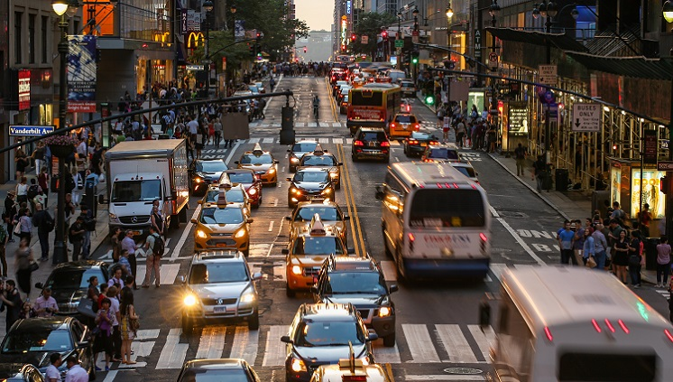

CAUSES OF NOISE POLLUTION
1. Industrialization
Most of the industries use big machines which are capable of producing a large amount of noise. Apart from that, various equipment like compressors, generators, exhaust fans, grinding mills alsoalt="pollution">participates in producing big noise. You're probably familiar with the sight of workers in these factories and industries wearing earplugs to minimize the effect of noise. However, even after taking precautionary measures like these, extensive exposure to high levels of noise might damage their hearing abilities in the long run.
2. Poor Urban Planning
In most of the developing countries, poor urban planning also plays a vital role. Congested houses, large families sharing small space, fight over parking, frequent fights over basic amenities lead to noise pollution, which may disrupt the environment of society. Noise pollution in urban settings may also be caused when residential properties and industrial buildings are in proximity. In situations like these, the noise from the nearby industrial property might hinder the basic well-being of the individuals living in residential properties. It doesn't just affect their sleep and hours of rest but also has an adverse effect on the development and well-being of children.
3. Social Events
Noise is at its peak in most of the social events. Whether it is marriage, parties, pub, disc or place of worship, people normally flout rules set by the local administration and create a nuisance in the area. People play songs on full volume and dance till midnight, which makes the condition of people living nearby pretty worse. In markets, you can see people selling clothes via making a loud noise to attract the attention of people. While this may not seem like much at the outset, over time, it affects the hearing abilities of the individuals who are constantly exposed to these sounds.
4. Transportation
 A large number of vehicles on roads, airplanes flying over houses, underground trains produce heavy noise, and people find it difficult to get accustomed to that. The high noise leads to a situation wherein a normal person loses the ability to hear properly.
5. Construction Activities
Under construction activities like mining, construction of bridges, dams, buildings, stations, roads, flyovers takes place in almost every part of the world. These construction activities take place every day as we need more buildings, bridges to accommodate more people. However, while this does help us to some degree, in the long run, the noise from construction activities hinders the hearing abilities of individuals exposed to this sound. A part of it includes construction workers who participate in these activities, while another part of it consists of people who encounter these noise either from their homes or while traveling.